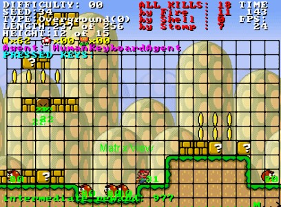

In my Junior year of college, I completed a very interesting intro to artificial intelligence class at Indiana University. For our final project, they tasked us to do anything we want that is somehow related to AI, giving us full access to any outside libraries or packages that we wanted. It was a lot of freedom, and for this me and my partner decided to make a Mario AI that could complete any level that it was given. To get the base code we needed we went to http://www.marioai.org, a website that provides code needed for a computer to run of a Mario game. The website is the home for a Mario AI competition that was popular around 2010. They provide you with a simple implementation of Mario and all you need to do is make an AI in any way that you want.
Now the normal thing to do (and most popular option) is to look at deep learning.
However, we wanted to try something different, so instead of using a neural networks, we implemented our AI with a simple A* search. To do this we made a heuristic (time taken to get to a position + time estimated to end of level), had all of Mario’s possible moves be his children, and evaluate each possible outcome. After evaluation, we choose the best ‘child’ and expand it, putting all the possible moves that Mario can make into the overall pool of possible moves. By continuing this over and over, it becomes a shortest path problem, eventually leading Mario to the end of the level This was a successful project, but there was one problem. The marioai.org code doesn’t allow Mario to ‘see’ the environment around him. This became problematic, because when Mario ran into a wall, he wouldn’t know that a wall is stopping him.Our heuristic was good, but when Mario was stopped by some obstacle, our program thought the move it was making was the correct one and continued to make the same move over and over. To combat this, we had a confidence function that tested how good our move actually was. If Mario didn’t move after our best movement was chosen, we put it back in the pool of possible outcomes and make the heuristical value a little worse. That way, eventually Mario will come upon the next best option, which is the one that would get around the obstacle instead of through it. It was a fun project, but a little more work than it should have been. For anyone that wants to see the results, the code is on my github.